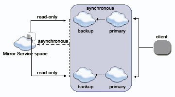

A Mirror Service can be configured per Space cluster. You can't have multiple Mirror services configured for the same space cluster.
If you need "multiple mirrors" for the same space cluster you can implement a Mirror Service that will route the data and operations to other multiple "agents" that will persist the data - effectively make the default Mirror act as a dispatcher.
If you have multiple different space clusters, each with its own Mirror service running, you should use a different name for each Mirror Service.
The Mirror Service name is used as part of the space config, specified via the cluster-config.mirror-service.url property. Its default is jini://*/mirror-service_container/mirror-service which match the "mirror-service" that is used as part of the url property used to start the mirror service.
As an example, let's say we would like to call my mirror service mymirror-service (instead of the default mirror-service). Here is how the mirror service should be started:
<ProcessingUnit>
<Mirrors>
<add Name="myMirror-service">
<SourceSpace Name="mySpace" Partitions="..." Backups="..."/>
<ExternalDataSource Type="GigaSpaces.Practices.ExternalDataSource.NHibernate.NHibernateExternalDataSource">
<!-- NHibernate-specific config goes here -->
</ExternalDataSource>
</add>
</Mirrors>
</ProcessingUnit>
Here is how the space should be started:
<ProcessingUnit>
<EmbeddedSpaces>
<add Name="mySpace" Mirrored="true">
<ExternalDataSource Type="GigaSpaces.Practices.ExternalDataSource.NHibernate.NHibernateExternalDataSource"
Usage="ReadOnly">
<!-- NHibernate-specific config goes here -->
</ExternalDataSource>
<Properties>
<add Name="cluster-config.mirror-service.url" Value="jini://*/mymirror-service_container/mymirror-service"/>
</Properties>
</add>
</EmbeddedSpaces>
</ProcessingUnit>
In some cases you may need to asynchronously persist data both into a relational database and a file, or persist the data into a relational database and transfer some of the data into some other system.
In such a case you may need to have multiple mirrors. In order to implement this, you should have one base mirror (for example the Hibernate Space Persistency) and extend it to include the extra functionality you may need.
See the Mirror Monitor for a simple example how such approach should be implemented.
|
The following is a schematic flow of a synchronous replicated cluster with three members, which are communicating with a Mirror Service: |
|
The Mirror Service space is used to asynchronously persist data into the data source. As noted elsewhere, the Mirror is not a regular space, and should not be interacted with directly. Thus, data can't be read from the data source using the Mirror Service space. Nonetheless, the data might be read by other spaces which are configured with a space data source. The data-grid pu.xml needs to be configured to use an space data source which, when dealing with a Mirror, is central to the cluster. Here is a schematic flow of how a Mirror Service asynchronously receives data, to persist into an data source, while the cluster is reading data directly from the data source. |
|
When partitioning data, each partition asynchronously replicates data into the Mirror Service. Each partition can read back data that belongs to it (according to the load-balancing policy defined). Here is a schematic flow of how two partitions (each a primary-backup pair) asynchronously interact with a data source: |
 |
Space persistency considerations also apply to the Mirror Service.
async-replicated, and partitioned cluster schemas.ExternalDataSource implementation of the space should be used to initialize the space when started.The space persistency logging level can be modified as part of the INFO:
com.gigaspaces.persistent.level = INFO
Logging is divided according to Level as follows:
| Level | Description |
|---|---|
| INFO | The default level for informative messages. |
| CONFIG | Mirror Service-relevant configuration messages. |
| FINER | Fairly detailed messages of: - Entering and exiting interface methods (displaying the parameter's toString() method)- Throwing of exceptions between the space and the underlying implementation. |
This section describes how the GigaSpaces Mirror Service handles different failure scenarios. The following table lists the services involved, and how the failure is handled in the cluster.
Active services are green, while failed services are red.
| Active/Failed Services | Cluster Behavior |
|---|---|
| * Primary - Backup - Mirror - Database |
* The primary and backup spaces, each include a copy of the mirror replication queue (which is created in the backup, as part of the synchronized replication between the primary and the backup). - The mirror doesn't acknowledge the replication until the data is successfully committed to the database. - Every time the primary gets an acknowledgment from the mirror, it notifies the backup of the last exact point in the replication queue where replication to the mirror was successful. - This way, the primary and backup space include the same copy of the data and are also in sync with whatever data was replicated to the mirror and written to the database. |
| * Primary - Backup - Mirror - Database |
* The backup space holds all the information in-memory, since the replication channel between them is synchronous. - The backup space is constantly notified of the last exact point in the replication queue where replication to the mirror was successful. This means that it knows specifically when the failure occurred. Therefore, it replicates the data received from that point onwards, to the mirror. - One possible scenario is that the same Entry is sent to the mirror, both by the primary and the backup space. However, the mirror handles this situation, so no data is lost or duplicated. - If the primary space is restarted (typically by the Service Grid infrastructure), it recovers all of the data from the backup space. Once the primary has retrieved all data from the backup, it continues replicating as usual. No data is lost. |
| * Primary - Backup - Mirror - Database |
* The primary keeps functioning as before: replicating data to the mirror and persisting data asynchronously, so no data is lost. - The primary space is constantly notified of the last exact point in the replication queue where replication to the mirror was successful. This means that it knows specifically when the failure occurred. Therefore, it replicates the data received from that point onwards to the mirror. - One possible scenario is that the same Entry is sent to the mirror both by the primary and the backup space. However, the mirror handles this situation, so no data is lost or duplicated. - If the backup space is restarted (typically by the Service Grid infrastructure), it recovers all of the data from the primary space. Once the backup has retrieved all data from the primary, it continues replicating as usual. No data is lost. |
| * Primary - Back Up - Mirror - Database |
* The primary and backup spaces accumulate the Entries and replicate them to their mirror replication queue (which is highly available since they both share it). - When the mirror is restarted, replication is resumed from the point it was stopped, prior to the failure. No data is lost. |
| * Primary - Backup - Mirror - Database |
* The primary space is constantly synchronized with the mirror, which stops sending acknowledgments or starts sending errors to it. - The primary and backup spaces accumulate the Entries and replicate them to their mirror replication queue (which is highly available since they both share it). - When the database is restarted, the mirror reconnects to it and persistency is resumed from the point it was stopped, prior to the failure. No data is lost. |
The following failure scenarios are highly unlikely. However, it might be useful to understand how such scenarios are handled by GigaSpaces. This is detailed in the table below.
Active services are green, while failed services are red.
| Active/Failed Services | Cluster Behavior |
|---|---|
| * Primary - Backup - Mirror - Database |
* Data which has already been saved in the database is safe. - Data held in the mirror replication queue still exists in the backup, so no data is lost. |
| * Primary - Backup - Mirror - Database |
* Data which has already been saved in the database is safe. - Data held in the mirror replication queue still exists in the backup, so no data is lost. |
| * Primary - Backup - Mirror - Database |
Same as above – no data is lost. |
| * Primary - Backup - Mirror - Database |
Same as above – no data is lost. |
| * Primary - Backup - Mirror - Database |
* Data which has already been saved in the database is safe. - Data queued in the mirror replication queue still exists in the primary and the backup, so no data is lost. |
| * Primary - Backup - Mirror - Database |
* All data that was successfully replicated to the mirror (and hence persisted to the database) is safe. - Data queued in the mirror replication queue in the primary and backup spaces is lost. |